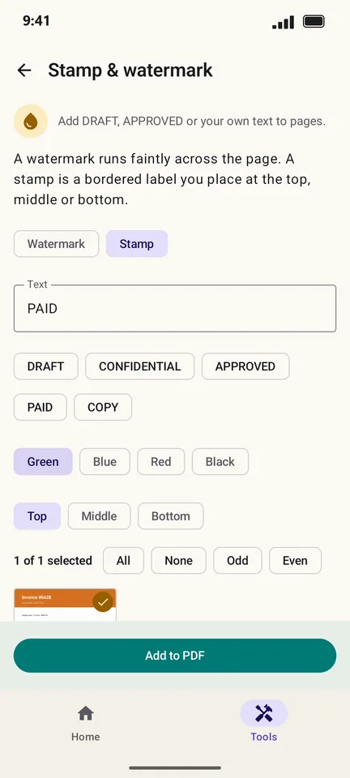
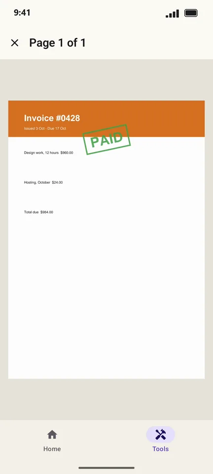

How to stamp or watermark a PDF on Android
Mark an invoice as PAID, a document as DRAFT or CONFIDENTIAL, or put your own text across every page. PageCat adds a bordered stamp or a faint watermark in the colour you pick.
Steps
Open the Tools tab, tap Stamp & watermark and pick the PDF.
Choose Stamp or Watermark, then a ready-made text (DRAFT, CONFIDENTIAL, APPROVED, PAID, COPY) or type your own, and pick a colour.

Tap Add to PDF. Tap a page in the preview to see it full size.

Good to know
- A stamp can go at the top, middle or bottom of the page.
- Use Odd, Even or tap pages to stamp only some of them.
Questions
Can someone remove the watermark?
A watermark is part of the page, but determined people with editing software can remove most watermarks. It deters casual copying; it is not security.